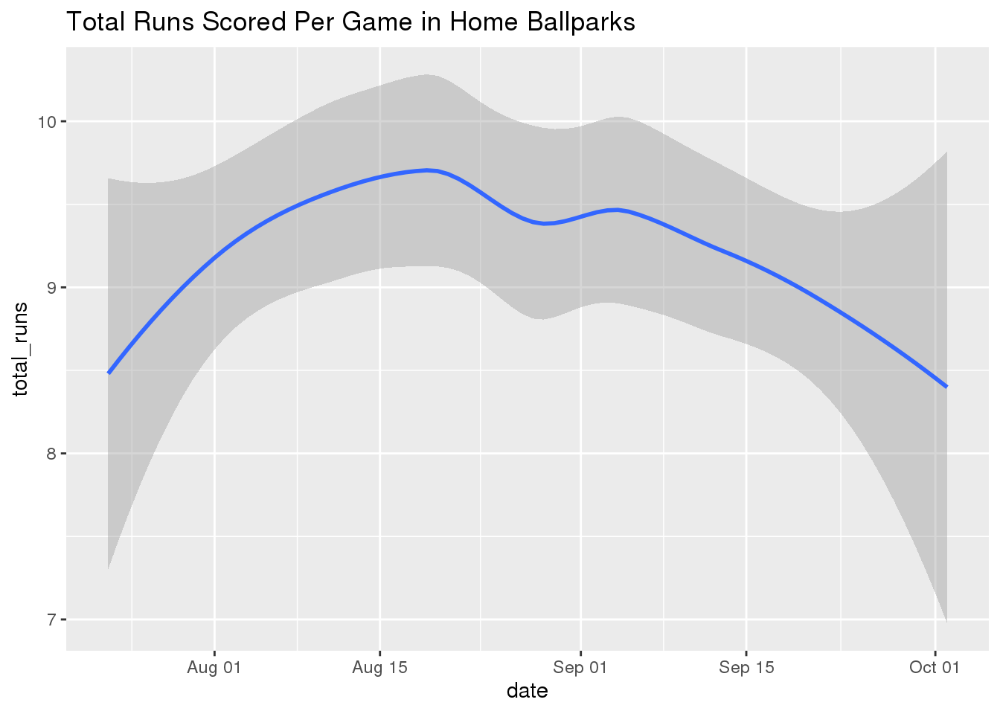
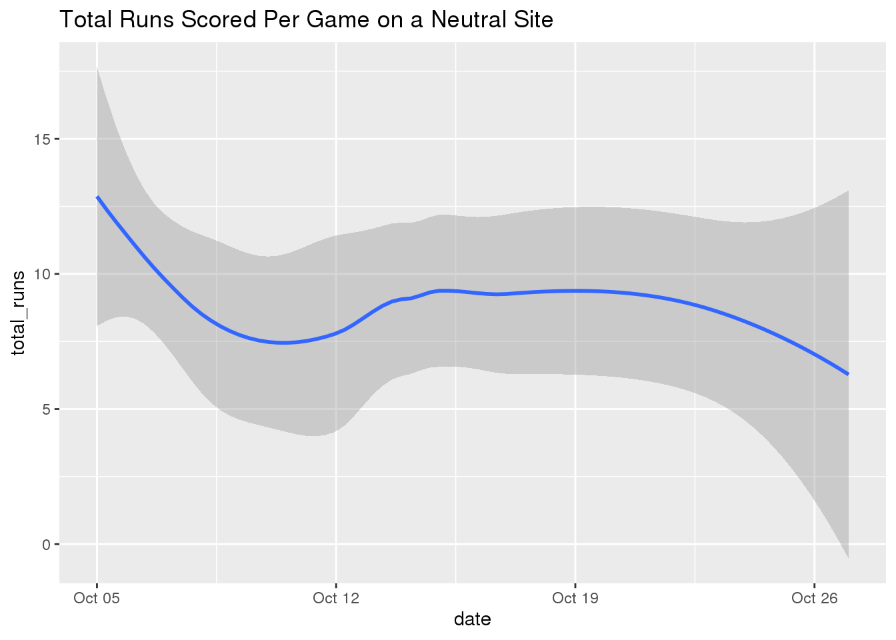

library(tidyverse)
dat_mlb <- read_csv("mlb_elo_latest.csv")The second dataset we’ll be examining for this project is the Major League Baseball Elo dataset given in the mlb_elo_latest.csv file on the FiveThirtyEight website. The MLB Elo dataset has 951 observations of 26 variables: the variables team1 and team2 are abbreviations for the home and away team, the variables elo_prob1 and elo_prob2 define the home and away team’s probability of winning according to Elo ratings, the variables pitcher1 and pitcher2 list the name of the home and away starting pitcher, the variables rating_prob1 and rating_prob2 indicate the home and away team’s probability of winning according to team ratings AND starting pitcher adjustment, and the variables score1 and score2 provide the number of runs scored for either team in each game.
Did games being played on a neutral site (mainly the postseason) lead to more runs being scored or was there not much of a difference? To explore this question, we visualize the total number of runs scored per game on a neutral site versus in series that were played in each team’s respective home ballpark.
home_ballparks <- dat_mlb %>% filter(neutral == 0) %>% mutate(total_runs = score1 + score2)
neutral_site <- dat_mlb %>% filter(neutral == 1) %>% mutate(total_runs = score1 + score2)
ggplot(data = home_ballparks, mapping = aes(x = date, y = total_runs)) + geom_smooth() + ggtitle("Total Runs Scored Per Game in Home Ballparks")## `geom_smooth()` using method = 'loess' and formula 'y ~ x'
ggplot(data = neutral_site, mapping = aes(x = date, y = total_runs)) + geom_smooth() + ggtitle("Total Runs Scored Per Game on a Neutral Site")## `geom_smooth()` using method = 'loess' and formula 'y ~ x'
Based on the visualizations, there wasn’t quite enough evidence to support the idea of more runs being scored on a neutral site as compared to a traditional home ballpark. Obviously, the neutral site graph contains a smaller sample size but a majority of its path still lies in that 8.5-9.5 run total. On the contrary, it can be said that the distinct line paths do vary between the two. In the home ballparks visualization, the line first increases from 8.5, reaches a peak around 9.5, and then naturally falls back down to 8.5 towards the end of the regular season. The line in the neutral site visualization starts by sharply decreasing from a higher run total of roughly 12.5, plateauing in the 8-9.5 range, and then finally trailing off below the 7.5 mark. Does this perhaps give us insight as to how pitchers adjusted throughout these relative time periods? We can seek to answer that question in the following analysis.